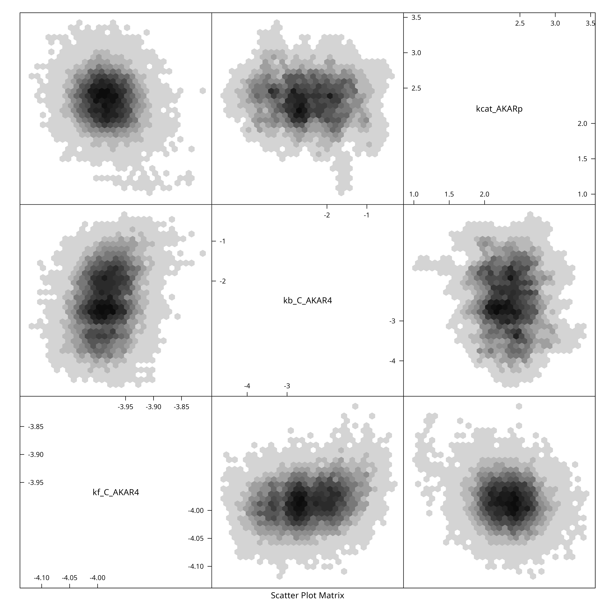

Uncertainty Quantification on AKAR4 (deterministic model)
sampleAKAR4.RmdLoad Model and Data
The first step is to locate and load the SBtab model files. In this example we use the SBtab files from an already existing example (“AKAR4”).
In the article “Build and simulate your own
Model you can read about how the set up your own SBtab model. You
can list the files in a directory with the dir()
command.
f <- uqsa_example("AKAR4")
m <- model_from_tsv(f)
o <- write_and_compile(as_ode(m))
#> Loading required namespace: pracmaThe chain of functions that we use to build the model tracks the name of the model via comments:
This comment is ultimately used to determine the automatic file-name of the shared library.
ex <- experiments(m,o)Take a parameter Sample for this Model
We use just one core as this is a tiny model. No MPI, no parallel tempering. First we construct the prior:
mu <- values(m$Parameter)
sigma <- m$Parameter$stdv
dprior <- dNormalPrior(
mean=log(mu^2/sqrt(mu^2+sigma^2)),
sd=log(1+sigma^2/mu^2)
)
rprior <- rNormalPrior(
mean=log(mu)/sqrt(mu^2+sigma^2),
sd=log(1+sigma^2/mu^2)
)Next, the MCMC method via metropolis_update, which
determines the sampling algorithm we are going to use. Finally, we
construct the sampler (MH below), which actually performs
the MCMC run, this function takes the inital values, number of steps and
the stepsize as arguments.
options(mc.cores=length(ex))
s <- simulator.c(
ex,
o,
parMap=logParMap,
omit=2
)
MH <- mcmc(
metropolis_update(
s,
dprior=dprior
)
)Finally, to obtain a sample of parameters:
x <- mcmc_init(
beta=1.0,
parMCMC=log(values(m$Parameter)),
simulate=s,
dprior=dprior
)
h <- tune_step_size(MH,x,h=1e-3)
#> acceptance rate: 0.96, step-size: 0.001;
#> acceptance rate: 1, step-size: 0.00187298;
#> acceptance rate: 0.94, step-size: 0.00352561;
#> acceptance rate: 0.93, step-size: 0.00658541;
#> acceptance rate: 0.86, step-size: 0.0122832;
#> acceptance rate: 0.71, step-size: 0.0226522;
N <- 5e4
# sampling:
X <- MH(x,N,eps=h)
print(attr(X,"acceptanceRate"))
#> [1] 0.59664